una canción para el fin del mundo/ cortometraje
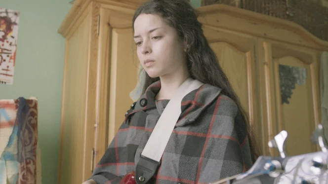
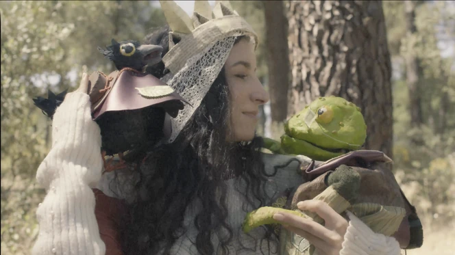
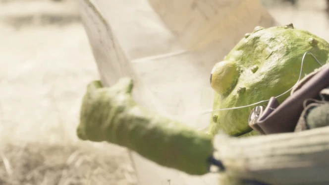
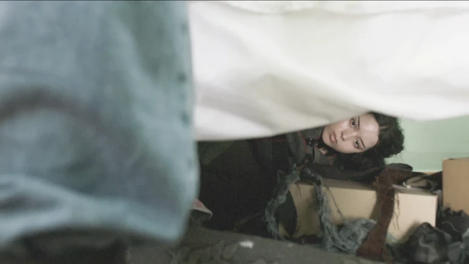
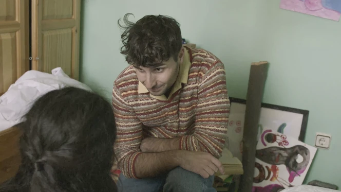





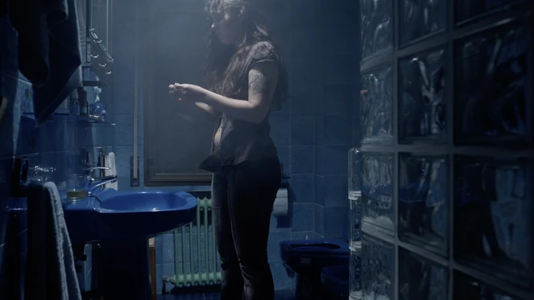
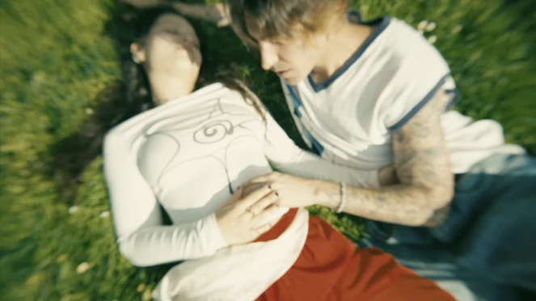
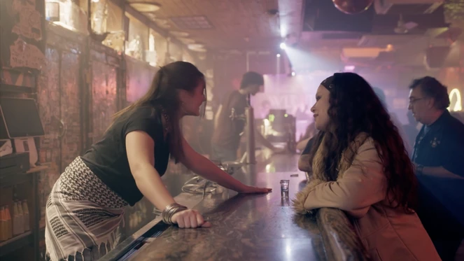
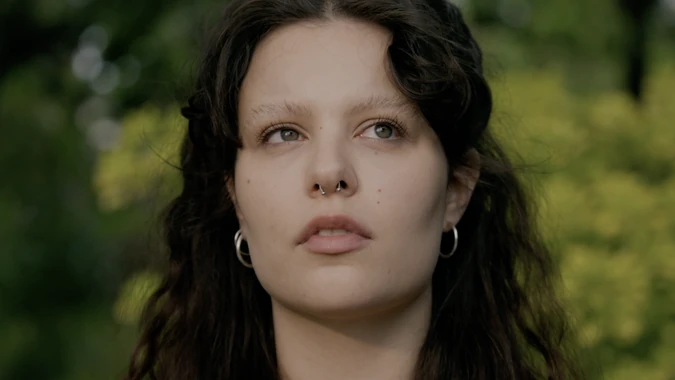
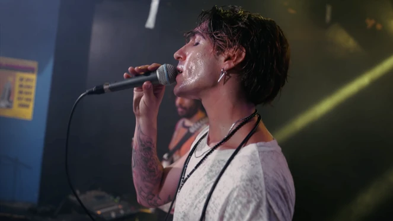
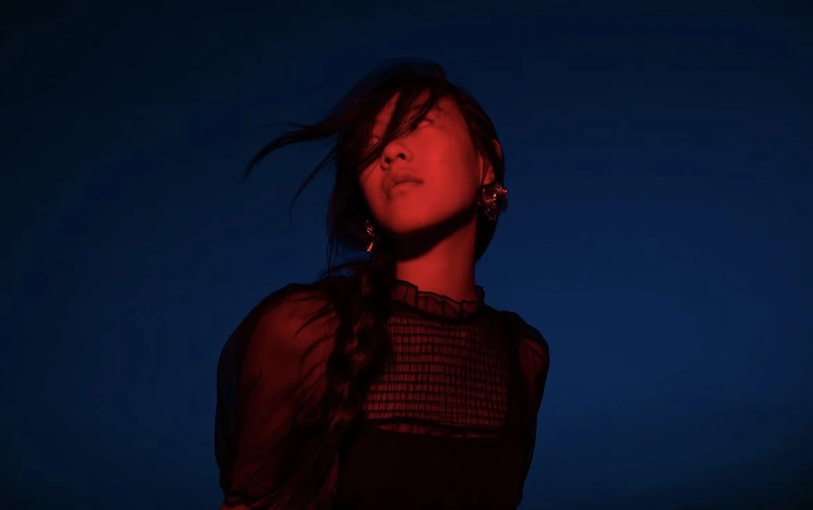
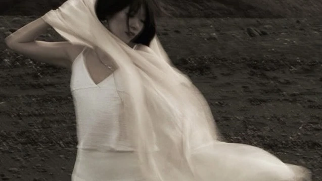
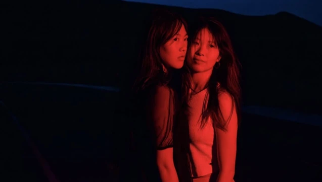

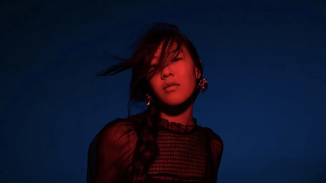
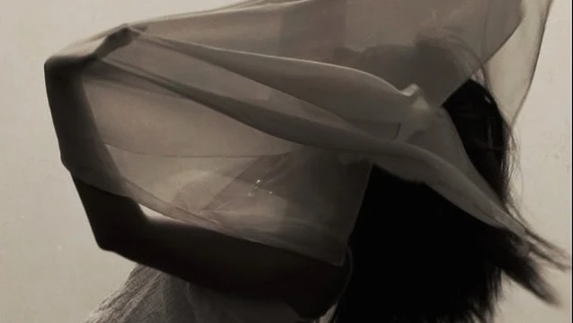
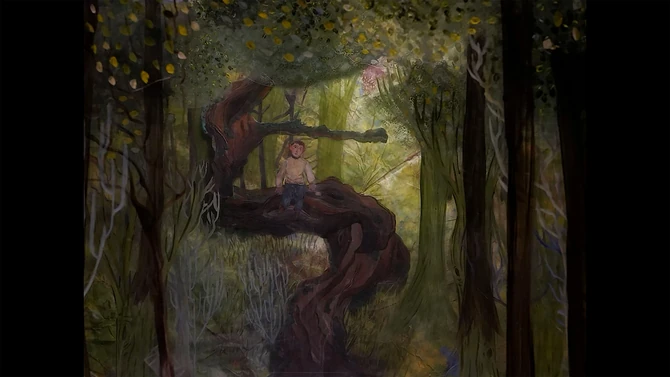
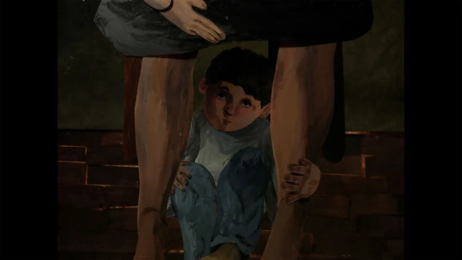
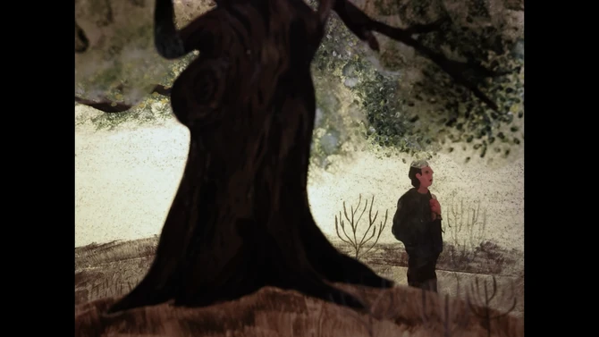
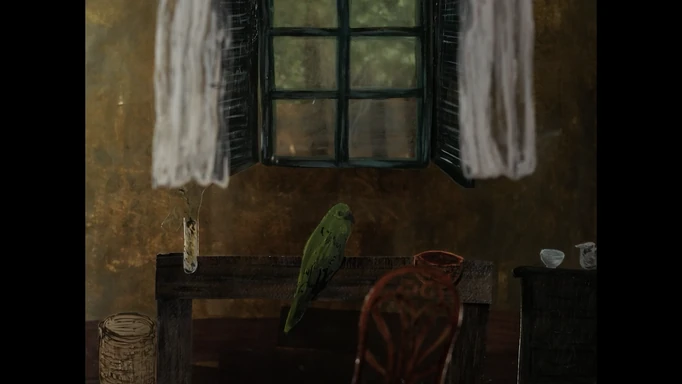
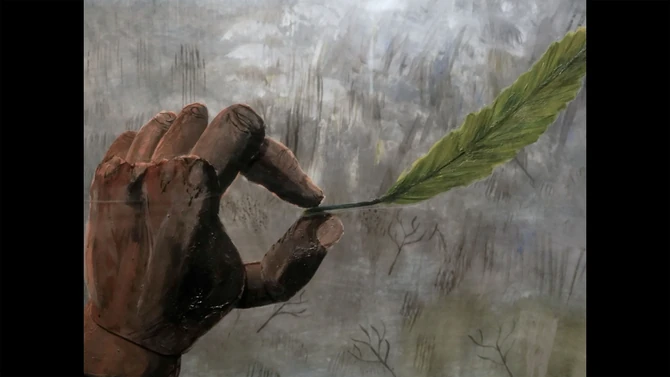
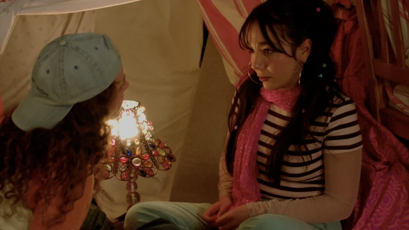
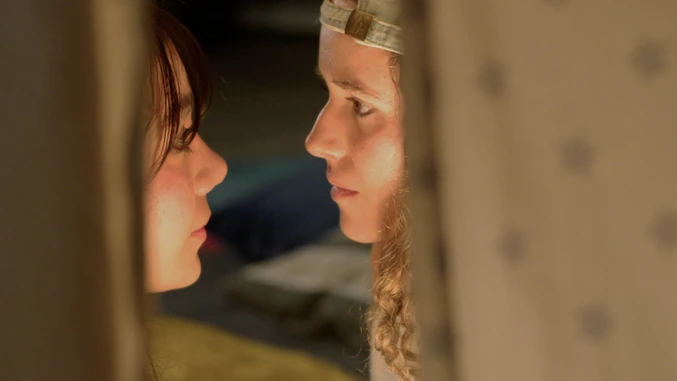
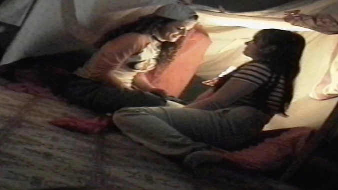
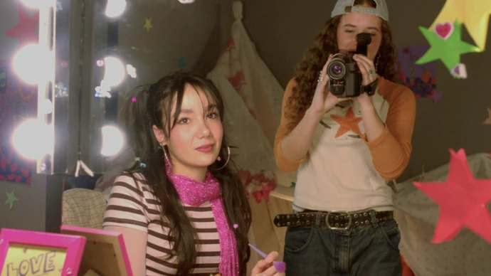
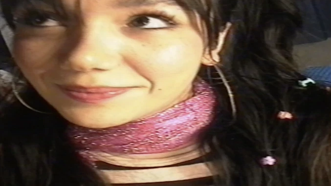
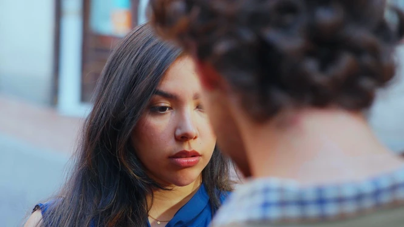
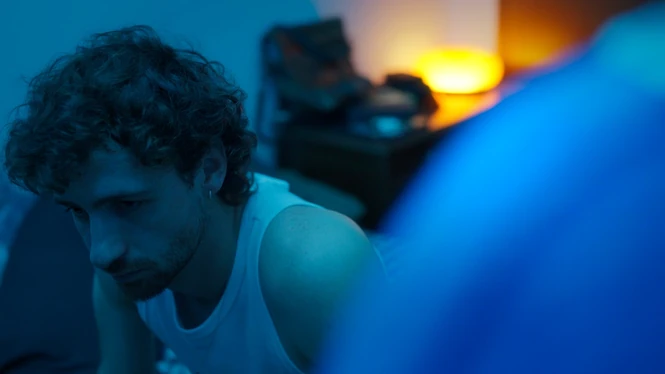
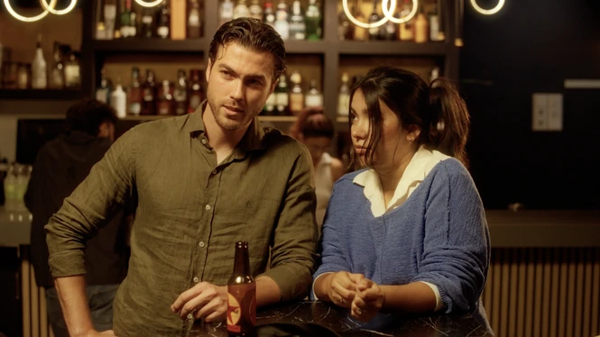
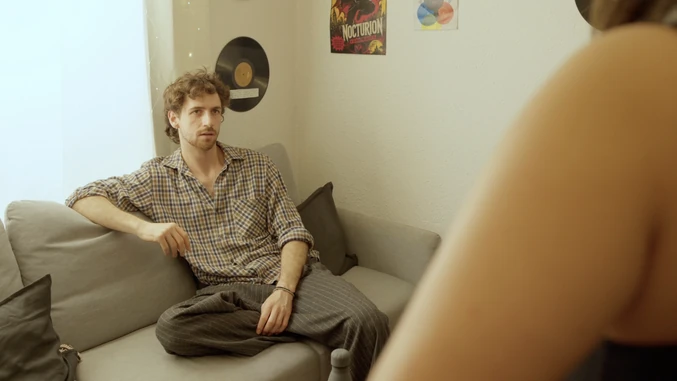
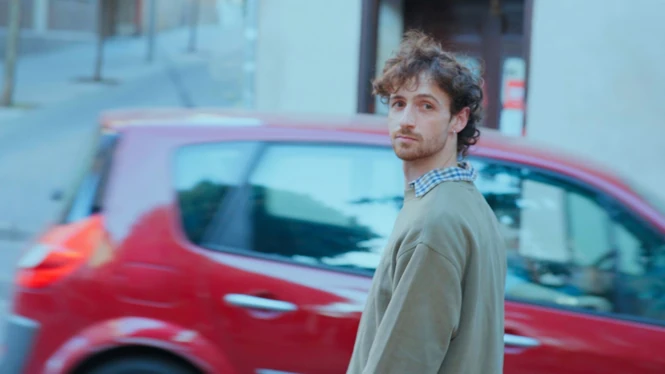
Graduada en Comunicación Audiovisual por la Universidad de Navarra. Apasionada por la dirección de fotografía y producción con experiencia en producción audiovisual y cultural, comunicación digital y dirección creativa.
He trabajado en festivales, proyectos artísticos y revistas de fotografía, desarrollando piezas audiovisuales, gestionando redes sociales y organizando eventos culturales.
Continué mi formación con un Máster en Dirección de Fotografía y Cámara en TAI Escuela de Artes en Madrid, donde me especialicé en dirección de fotografía y operación de cámara.
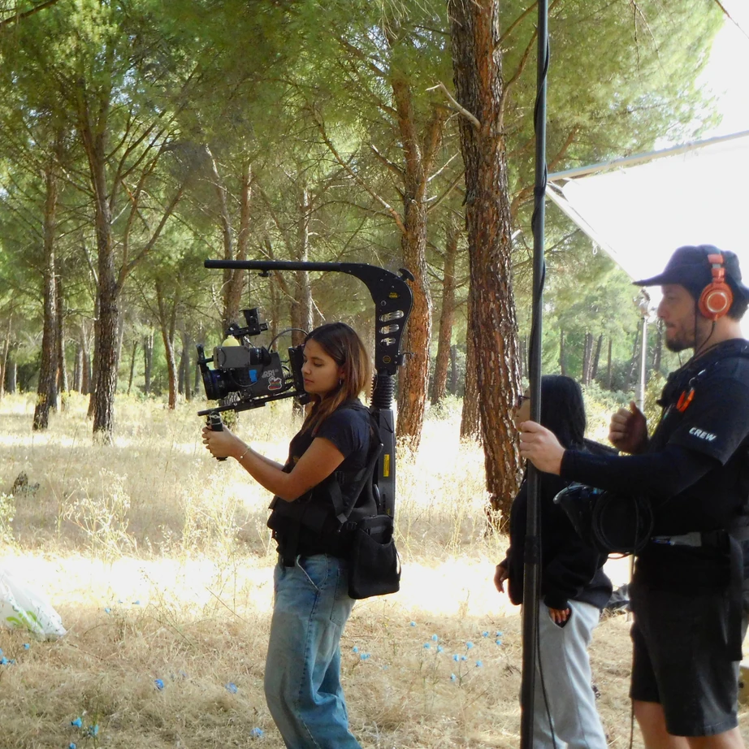